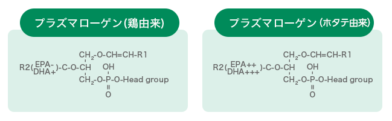

プラズマローゲンEX
プラズマローゲンEXは国産鶏の胸肉から抽出したプラズマローゲンを配合したサプリメントです。
機能性標示食品なので信ぴょう性あり、かつ鶏由来だから低価格を実現しているとあって、数あるプラズマローゲンサプリの中でも注目を集めています。
どんな魅力を持つサプリなのか、詳しく紹介します。
機能性標示食品で信ぴょう性◎！国産鶏由来のプラズマローゲンを採用
プラズマローゲンの素材として鶏・ホタテなどが主流ですが、本商品では国産鶏から抽出したプラズマローゲンを使用しています。
ホタテは高額であること、また貝毒の危険性（食品衛生法に基づく規制値が定められているため産地が明記されているプラズマローゲンサプリであれば心配はありません）などからあえての鶏を素材として選択しているとのことです。
そのため、鶏由来のプラズマローゲンの力はどの程度なのか気になるところですよね。
ご安心ください。
本商品は臨床試験を受けていて、認知症改善に役立つことが確認されているんです。
「認知機能の一部（記憶力）を維持する」といった機能性標示が認められています。
ただ、プラズマローゲン配合量は500㎍と少な目な点が気になる他（推奨目安摂取量は1,000㎍です）、鶏抽出のプラズマローゲンはホタテ由来のプラズマローゲンに比べてDHA・EPAなどの不飽和脂肪酸の配合率が少ないため、期待度や違い実感度としてはプラズマローゲンSに負けています。

高品質なのに続けやすいお値段設定で約9割がリピート！
プラズマローゲンEXが人気の理由として、その価格が挙げられます。
機能性標示食品なので、データに裏付けされた予防・対策効果があることが確かです。
さらに原料についての明記があり、医療品製造と謙そんのない製造基準の国内GMP工場で製造されているので品質の高さも確認できます。
品質や信ぴょう性が高いにも関わらず、ホタテ由来のプラズマローゲンサプリの半額以下というコスパ！
毎日負担なく続けられるため約9割の方がリピートしているとのことです。
個人的には軽度認知症の方や認知症予防に役立てたい方に向くサプリかと思います。

プラズマローゲンEXの口コミ
大満足の口コミ

- 26歳 主婦 Cさん
穏やかな時間が戻ってきました
いろいろと試してみましたがよくならず、あきらめかけていたところ、サプリメントがあるとは知らず、びっくりしました。
今は表情もとても穏やかで、変化も気にならなくなってきたほどです。
このままの状態が続けば、一緒に出掛けたいと思います。
- 43歳 主婦 Nさん
本人も喜んでいます
82歳の父に飲んでもらって1週間ほどになります。
頸椎の手術後、手足のしびれなどがあるのですが、これはまだ、あまり変わらないとのこと。
でも、腰痛が少し楽になったような気がすると言っていました。
他のメーカーのサプリは半年飲んでも効果が感じられないといっていましたが、これは、期待が持てるかも？
しばらく続けてみようと思います。
- 39歳 主婦 Lさん
家族で愛用しています
母が何度も購入して、今は私と小学生の娘も飲み始めました。
母は疲れると、会話がかみ合わなくなっていましたが、飲み始めてからは90%以上そういった事はなくなりました。
今度は姉にも勧めます！
イマイチの口コミ

- 67歳 Hさん
効果はまだ不明
飲み初めて約1ヶ月経過しましたが、明確な効果はまだみられません。もう少し続けてみようかどうしようか考慮中です。
- 46歳 主婦 Fさん
お値段がもう少し安いと良かったです
服用すると頭の働きが良くなるような気がします。仕事もスムーズに進んで有り難いのですが、飲むと何だか疲れる気が… 73歳になる母は、飲むと良く眠れると言っていました。
ただやはり続けるには高価ですよね。